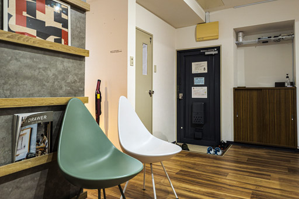
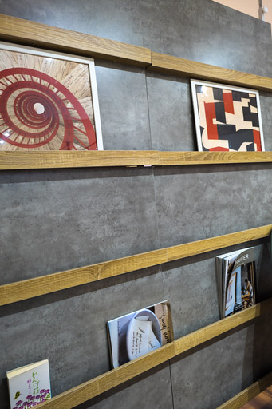
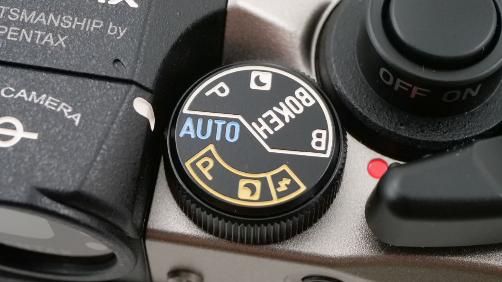
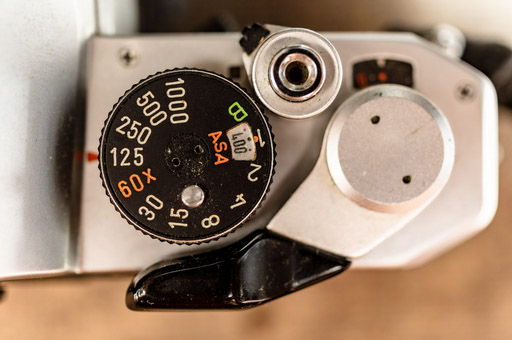
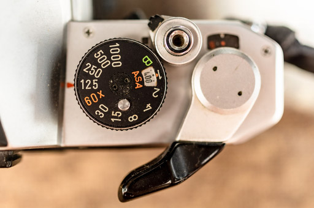
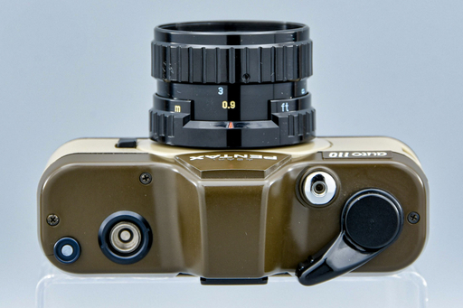
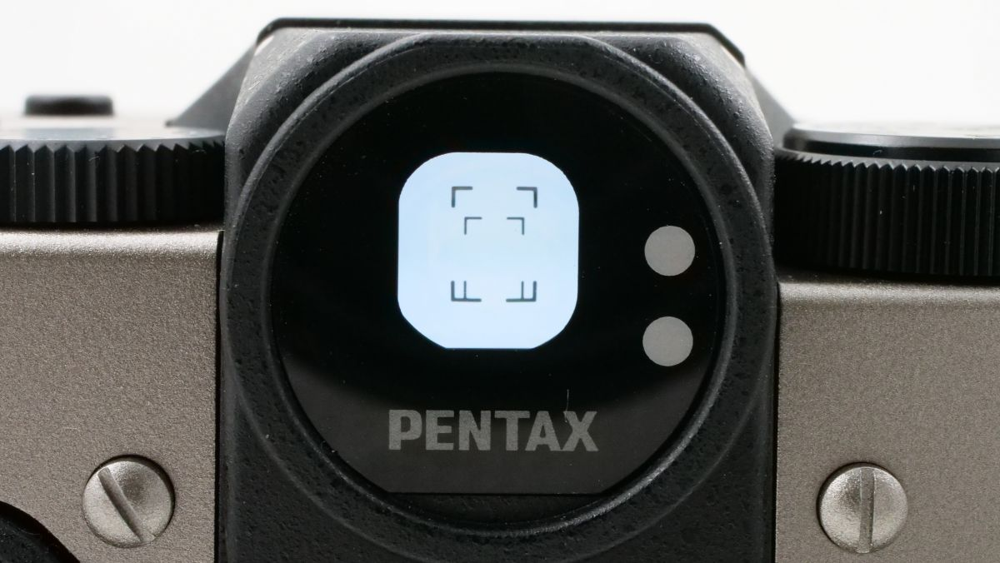
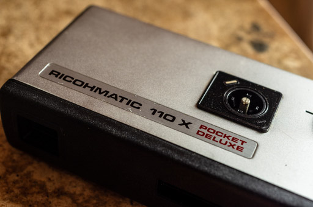
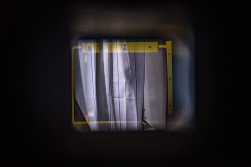

神戸の三宮で PENTAX 17 の体験会があったので応募して行ってきた。なお体験会の金額は 2500 円。Kodak Color Plus 36 枚撮りが付くので、実質フィルム代ってことになる。
カメラの貸出と回収が二宮町の入江ビル 3 階 302 号室で、阪急三宮の駅からたどり着くのに迷った迷った。フラワー通りあたりは庭という程ではないが、そこそこ出かける場所ということもあり、まさか迷うことはないだろうと思っていたら全然ビルが見つからない。
なんとかビルを見つけたものの最初は入口すらわからなかった。大阪 (他の地方のことは知らないので) では最初に起業した人がマンションを改造したレンタルオフィスで事業を始めることがよくある。入江ビルはそんな昭和の終わりか、平成のはじめに住宅がオフィス化されたようなつくりの、3 階建てレンタルオフィスビルだった。あまり雰囲気がいいとは思えず、PENTAX ってここまで落ちぶれたのかとちょっと悲しくなった。
こういうところで事業を始める人の印象としては、資金繰りに困ったら手形を割りまくったり、中には街金に泣きついたりしそうという印象が強い。まぁそれは今回のイベントとも PENTAX とも関係ないので余談。
郊外の街であれば、同じレンタル価格でもう少し人が入りやすく、そこそこきれいなレンタルスペースを借りることができる。とはいえ、どこでイベントをやるのかということは大事な問題なので、三宮近辺で安いとなるとこういったところしかないのだろう。
でも部屋の中はきれいだった。
仮に大阪梅田の近くでやるとしたら、同じようなレンタル物件は中津や西中島南方あたりであればたくさん見つけることができる。安いかどうかは知らないけど。
それなりに部屋の装飾にも気が配られていた。でもこのラックは、恐らく PENTAX 自身が用意したものではない。ビルのオーナーもしくは管理会社が設置しているものだ。こんなもの東京からわざわざ運べない。
そのためディスプレイされているものを含めて一切触らないほうが良い。なにかあったら PENTAX の営業さんに迷惑がかかる。
なおこの日記を書いている時点では PENTAX 17 で撮った画像は手元にない。八百富写真機店にお願いして現像の真っ最中だからだ。昔のように万人がカメラを所有していて、街のいたるところに DPE があった時代では最早ないのだ。
また写真があがってきたらこの日記を更新するつもりでいる。撮った画像はそれまで待っていただけるとありがたい。
とりあえず雨が降っていたこともあり、体験会自体はソロで二宮町をうろうろするにとどめた。営業さんにも話したのだけれど、天気が良ければ布引の方まで足を伸ばす予定だった。でも残念ながら雨だったので会場周辺を歩くにとどめた。
最初に 24 枚撮りの ILFORD HP5+ を詰めてでかけた。増感現像するつもりだったので ASA の設定は 800 にした。これが後の悲劇を招くことになるが今は横に置いておく。
まず最初に、二宮商店街は雰囲気がすごくいいぞとお伝えしておきたい。モノクロや GR で撮ってもいいかもしれない。二宮商店街はシャッター商店街化してるので、いつ消えてもおかしくない。そのためやっぱり撮っておいて、確かにそこに存在したということを残しておきたい。そう思った。
二宮商店街で HP5+ ハーフサイズ 48 枚を撮りきってしまった。カメラを借りてからまだ 30 分経ってない。やばい。楽しい。この楽しさは GR と共通するものを感じる。ついうっかりほいほいとレリーズを押してしまう。レンズシャッターのシャっという控えめな機械音も心地よい。
固定焦点というのもよい。脚で構図を決めるという身体性がとてもよい。自分自身が写真を撮っていると実感できる。
ただ事前に仕入れていた情報通りの問題点は自分も経験した。
以下批判目的ではなく、あくまでニーズの表明であることをお断りしておく。ニーズの表明なのであえて資金的問題やサプライチェーンが絶滅しているという問題いついてはちょっと横に置いておく。未来を信じたいから。
このモードダイヤルにフィルムを送る時に指が当たって気がつくとモードが切り替わってしまう。これにだけは閉口した。こいつのおかげで撮影カットの半分は駄目なものである可能性が高い。
PENTAX MX ではこうはならない。巻取りレバーの形状やレバーの位置、シャタースピードダイヤルの位置から、巻取りレバーを操作しても指がダイヤルに触れることがまずない。
そもそもシャッタースピードダイヤルのクリックがしっかりしていて、指がちょっと触れたくらいでは回らないというのもある。せっかく MX や LX など往年の名機たちをオマージュしているのだから、このあたりも真似てほしかった。懐古趣味などではなく実用性を理由として。
また PENTAX MX の巻取りレバーは完全に元の位置に戻るのではなく、画像のように少し手間でクリックがかかり止まるように作られている。この位置までは遊びになっている。この遊びとレバー自体の形状も相まってよくできていた。
これらのことは auto 110 の巻取りレバーシステムを流用したのでやむを得なかった。そのように PENTAX の社員さんはいたるところで言っている。それではなぜ auto 110 のレバーを採用したのかという疑問が消えない (くどいが資金的な問題とサプライチェーンの絶滅問題は横に置いておく)。
PENTAX auto 110 はご存知の方もいらっしゃるだろうが、巻き上げレバー側には巻き上げレバーとレリーズボタンしか存在しない。そもそもダイヤルなどないから問題は起こらない。
だが PENTAX 17 ではそうはいかない。17 にモードダイヤルが欠かせない存在である以上、モードダイヤルと巻取りレバーは auto 110 ではなく MX や LX、ME 等の頃の製品をオマージュすべきだった。PENTAX 17 は決して安いカメラでもないし、ここは頑張ってほしかったところ。
少なくとも MX や LX のようにクリックでレバーを停止状態にできれば 、問題は緩和される。これはぜひ実装してほしかった。あるいはレバーの初期角度をレバー先端がわずかにボディからはみ出るような角度に設定していれば、この問題を生じさせることもなかったと考えられる。
もしかするとボディからレバー先端がボディからはみ出るとレバーが壊れやすいとか、ぶつけた表紙にロールがちぎれるというような事故を危惧していたのかもしれない。であればそれは杞憂だと言える。ボディからレバーがはみ出ることで、ロールがちぎれたり、ローディングシステムが壊れるなら、50 年以上前に作られたカメラすべてで同じことが起きていたはずだ。実際にはそんなことは起きていなかったし、フィルムカメラブームと言われる昨今でもまったく聞かない。
フィルムカメラの設計図面以外のノウハウがほぼ社内に残っていなかったという話もあるので、やむを得ないといえばやむを得ない話ではあるけれど。
返却してから思いついたのだけど、ワークアラウンドとして、モードダイヤルの設定変更が若干面倒になるが、モードダイヤルをマステで固定してやればいいのではないかと思った。
よくあるサムレストのように、サードパーティ製でもいいので、巻取りレバーにつける延長アダプターのようなものが発売されると飛びつく人は少なくないかもしれない。PENTAX 17 の巻取りレバーはほとんど遊びがないので形状としては上から見ると逆Ｚ型になりそうな気はする。
そしてもう 1 つの問題がこのファインダーだ。こちらの方が問題としては重大である。
だいたいにおいて何も問題はない。しかし明るいところにカメラを向けた途端問題が露わになる。
ファインダー内のフレームを示すガイドラインがまったく見えなくなるのだ。ガイドラインが見えないので、もはや勘で撮るしかなくなる。
これは日光に光を向けた場合とかの話ではない。雨もしくは曇りの日の白っぽいビルの壁面などにカメラを向けただけで、このガイドラインが一切見えなくなる。これは筆者の老眼のせいでは決してない。
筆者が中学生の時手に入れた人生初のカメラ RICOHMATIC 110 X POCKET DELUXE でどうだったかと思い引っ張り出してきた。
下の画像ではガイドラインが目立つよういろいろ調整しており目視した状態そのものではない。とはいえ、強い日差しが当たったカーテンにカメラを向けてファインダーを覗いてみても、問題なく黄色いガイドラインとグリーンのピント位置は視認できた。モダンなデザインとはとても言えないが、使用にはまったく問題がない。
体験会の短い時間ではワークアラウンドを発見することはできなかった。しかしこの日記を書いている今しがたワークアラウンドを思いついた。ファインダーの一部をマステで隠してしまうのだ。
思い返せば PENTAX 17 のファインダーは固定焦点にも関わらず、やたらとファインダーの余白が多く取られている。ファインダーの縁とガイドラインの余白があまりに大きすぎるのだ。特にファインダー上部の余白が大きすぎる。あれは塞いでしまうべきだ。
とはいえマステのベタベタ貼られたカメラが美しいだろうか？そんなはずはない。できればマステなんて貼りたくはない。それは当然のことだ。
可能なら PENTAX からファインダーに貼り付けるシートのようなものが配布されると大変よい。PENTAX 17 は高額なカメラだ。だから正規ユーザには無償で配布してもいいくらいだ。それくらいのアフターサポートはさすがに望みたい。
ファインダーのガイドラインが役に立たないことから正直使ってる間ずっと Nikonos III のスポーツファインダーのようなファインダーが欲しいと思い続けていたのは告白する。
撮像範囲の目安がなにもわからないよりは遥かによい。
あえて PENTAX 17 に厳しい言葉を投げているが、ファインダーだけは視認性を改善しないとこのままでは実用性がない。出るかどうか不明だが、次期フィルムカメラではなんとかして欲しい。なにせ GR のようにファインダーを交換すればよい、液晶で確認すればよいというわけにはいかないのだから。
最期に今日の日記を整理する。
巻き上げレバーとファインダーの問題がなければ、がまんできずに帰宅して Ricoh Imageing の Web ストアでポチってたとおもう。それくらい撮影体験自体は気持ちよくて良かった。